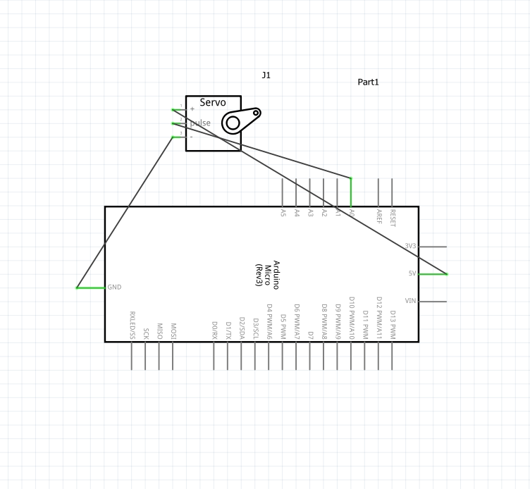

The ThriveMind project is an innovative interactive installation designed to promote and reward focused work sessions through a visual representation of mindfulness. By utilizing facial detection technology, ThriveMind monitors how long the user remains focused on their screen and responds by blooming a flower as a symbol of sustained concentration. This tangible visual feedback encourages users to maintain focus, thus cultivating better work habits and fostering mindfulness during their tasks. The gradual blooming of the flower serves as a metaphor for the growth and benefits of sustained attention, providing users with a clear indication of their productivity.
The concept behind ThriveMind lies at the intersection of technology, mindfulness, and creativity. By combining computer vision with hardware control, ThriveMind aims to create an immersive experience that visually represents the user's level of focus. The flower bloom metaphor serves to provide users with immediate feedback on their concentration, reinforcing positive behaviors. As users concentrate, the flower gradually opens, symbolizing productivity and growth. Conversely, when focus is lost, the flower gently closes, serving as a reminder to bring attention back to the task at hand. This design approach makes it easier to internalize the importance of focus and track progress in a visual and meaningful way.
The interaction model of ThriveMind is straightforward but impactful. The system uses a webcam to monitor the user's facial activity, specifically focusing on eye contact with the screen. If the user maintains eye contact, the system interprets this as focused attention. The ESP32 microcontroller and an Arduino-controlled servo motor are then employed to translate this data into physical movement, gradually opening or closing the flower petals. This interactive, gradual physical change offers users a direct visual representation of their level of engagement. The ESP32 facilitates seamless communication between the computer and the hardware, ensuring that the response is real-time, intuitive, and engaging.
Python Code:
import cv2
import time
import serial
# Set up face detection
face_cascade = cv2.CascadeClassifier(cv2.data.haarcascades + 'haarcascade_frontalface_default.xml')
cap = cv2.VideoCapture(0)
# Set up serial connection to ESP32
esp32 = serial.Serial('/dev/tty.usbserial-0001', 115200) # Replace with your ESP32 port
# Variables to track screen time and servo position
screen_time = 0
current_position = 0
start_position = 0 # closed position
end_position = 180 # fully bloomed position
increment = 1 # how much the servo moves with each step
try:
while True:
ret, frame = cap.read()
if not ret:
break
gray = cv2.cvtColor(frame, cv2.COLOR_BGR2GRAY)
faces = face_cascade.detectMultiScale(gray, 1.1, 4)
# Check if a face is detected and adjust screen_time
if len(faces) > 0:
screen_time += 1 # Increment screen time if a face is detected
else:
screen_time = max(screen_time - 1, 0) # Slowly decrease if no face is detected
# Calculate target position based on screen time
target_position = start_position + int((end_position - start_position) * min(screen_time / 100, 1))
# Move servo toward target position gradually
if current_position < target_position:
current_position = min(current_position + increment, target_position)
elif current_position > target_position:
current_position = max(current_position - increment, target_position)
# Send current position to ESP32
esp32.write(f"{current_position}\n".encode())
print(f"Servo Position Sent: {current_position}")
time.sleep(0.1) # Short delay for smooth movement
except KeyboardInterrupt:
print("Program interrupted")
finally:
cap.release()
esp32.close()
cv2.destroyAllWindows()
Arduino IDE Code:
#include
#include
Servo myServo;
int pos = 0; // Variable to store the servo position
void setup() {
Serial.begin(115200);
myServo.attach(23); // Replace with the pin connected to your servo
}
void loop() {
if (Serial.available() > 0) {
int screenTime = Serial.parseInt(); // Read the integer value sent from MacBook
// Map screen time to a 0-180 degree range for the servo
pos = map(screenTime, 0, 100, 0, 180);
myServo.write(pos);
delay(15); // Allow time for the servo to reach the position
}
}
The electronics behind ThriveMind are powered by an ESP32 microcontroller, which serves as the heart of the system, managing the servo motor that controls the petals of the flower. The schematic highlights how each component is interconnected to bring the concept to life. The servo motor receives commands from the ESP32, which in turn gets its instructions based on the user’s interaction with the screen. The circuit schematic demonstrates the simplicity and effectiveness of the design, showing how a few carefully chosen electronic components can create an expressive and engaging interactive experience.
Watch the interaction with ThriveMind below: